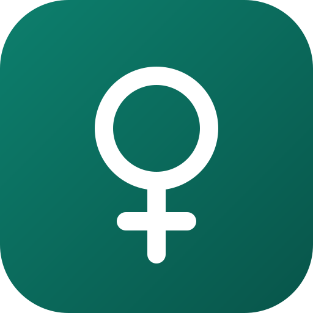
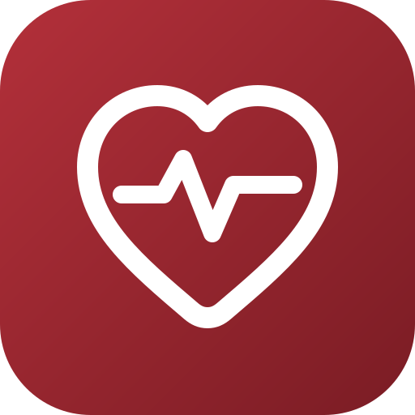
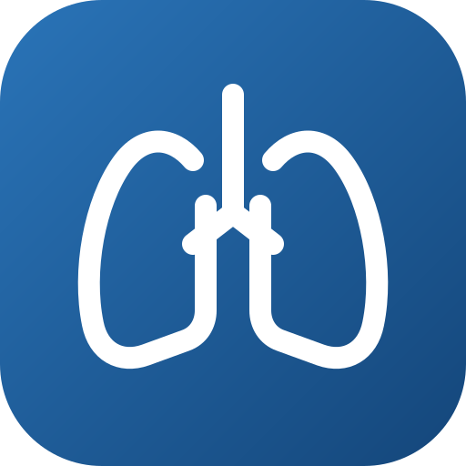
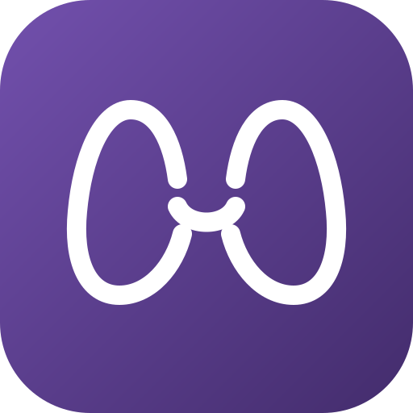
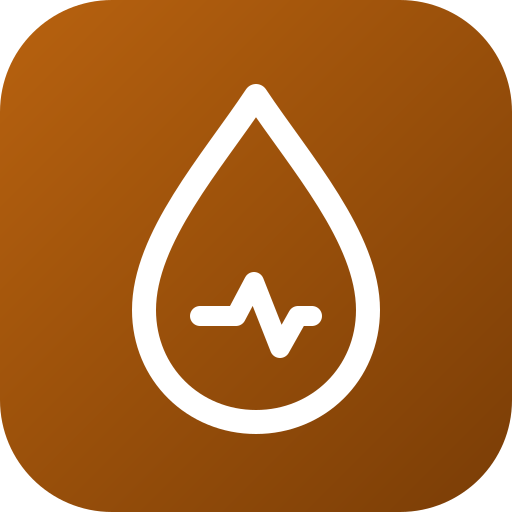
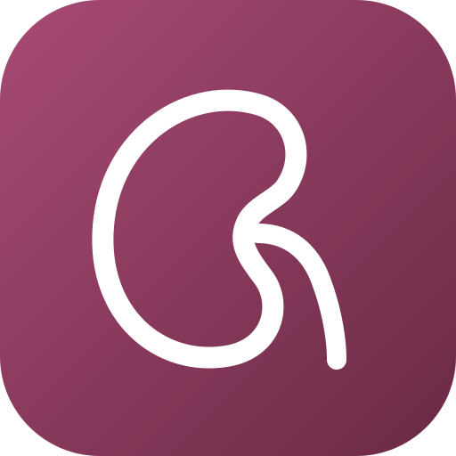

Kvindesundhed
Klimakterie og hormonbehandling (MHT), risikovurdering, prævention, MRS-scoring og osteoporose med frakturrisiko og opfølgningsplan.
Almen praksis · danske forhold
Syv små, gratis apps til konsultationen. De installeres fra browseren — uden App Store — og virker uden internet, når de har været åbnet én gang. Intet sendes nogen steder hen.
Scan QR-koden med telefonens kamera, eller send linket:
Browseren installerer én app ad gangen, så hver app installeres for sig (ca. 10 sekunder pr. app). Installér kun dem, du bruger. Apps opdaterer sig selv, næste gang de åbnes med internet.

Klimakterie og hormonbehandling (MHT), risikovurdering, prævention, MRS-scoring og osteoporose med frakturrisiko og opfølgningsplan.

CV-risiko med SCORE2/SCORE2-OP/SCORE2-Diabetes, antikoagulation ved atrieflimren og tolkning af EKG-måleværdier.

KOL og astma: diagnostik, gruppering, inhalationsbehandling og eksacerbationer.

Tolkning af TSH og T4, behandlingsindikation, levothyroxin-dosis, graviditet og opfølgning.

Individuelt HbA1c-mål, valg af glukosesænkende behandling efter hjerte, nyrer og eGFR, og årskontrol.
Antibiotika ved luftvejs-, urinvejs- og hudinfektioner: hvem skal behandles, præparat, dosis efter vægt og varighed.

Kronisk nyresygdom (KDIGO-stadie, KFRE, kontrol og henvisning) og dosis efter nyrefunktion.